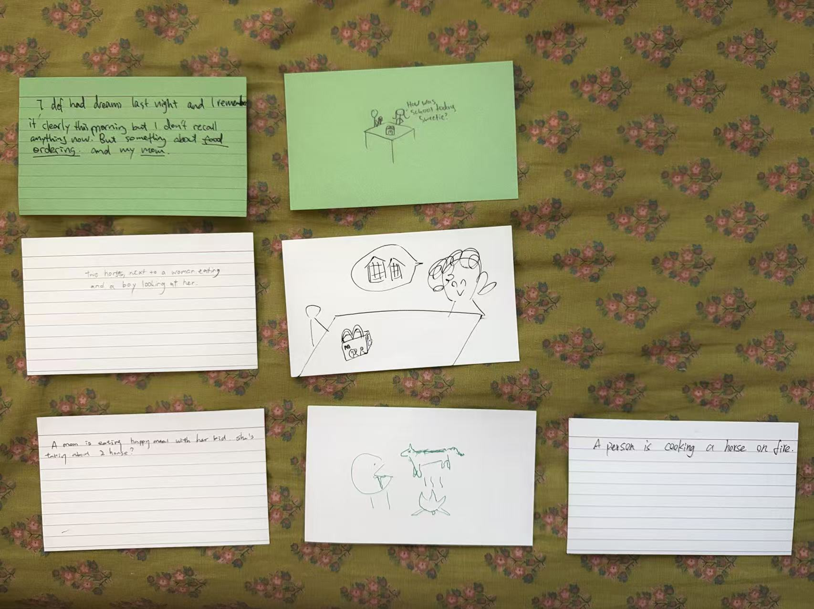

Last class we played a drawing version of the telephone game.
It was a little chaotic but fun, and it reminds me how information can be lost
or emphasized differently as it is passed along.
For information receivers, it's really important that the instructions
are clear and concise, and that the information is presented
in a way that is easy to understand.
For information senders, it's important to be aware of how the
information is being received and to make adjustments as needed
to ensure that the information is being communicated effectively.
